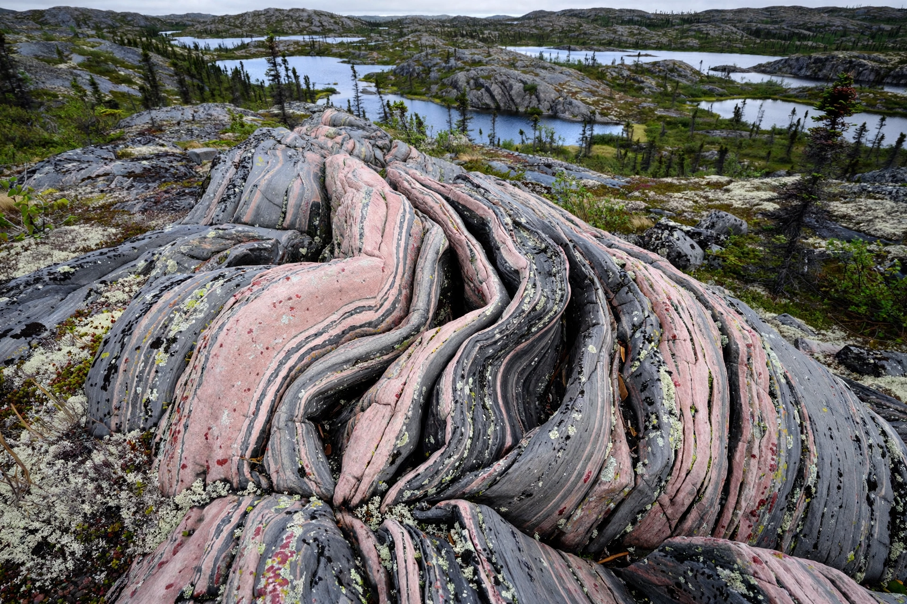

Acasta Gneiss

| Type | Metamorphic rock (tonalitic gneiss) |
|---|---|
| Age | ~3.6–4.03 billion years (Hadean/Archean) |
| Location | Slave Craton, Northwest Territories, Canada |
The Acasta Gneiss Complex is a rock outcrop of tonalitic and granitic gneiss in the Slave Craton of the Northwest Territories, Canada, near the Acasta River east of Great Slave Lake. It contains some of the oldest known rocks on Earth: zircon dating has yielded ages up to about 4.03 billion years, placing its formation in the Hadean eon, only a few hundred million years after the Earth itself formed.
Geology
The complex consists of strongly deformed, banded gneisses derived from tonalite–trondhjemite–granodiorite (TTG) intrusions and amphibolites. Uranium–lead dating of zircons, first reported by Samuel Bowring and colleagues in 1989, established the exceptional antiquity of the oldest components. In 2008, researchers reported a still older age of about 4.28 billion years for rocks in the Nuvvuagittuq Greenstone Belt of Quebec, though those dates remain debated; the Acasta Gneiss remains among the oldest undisputed crustal material, alongside detrital zircons from Jack Hills, Australia.
Significance
Because almost all of Earth's earliest crust has been destroyed by tectonics and impacts, the Acasta Gneiss provides rare direct evidence about the Hadean Earth — the era of the Moon-forming impact and the Late Heavy Bombardment — and about how the first continental crust formed and evolved.